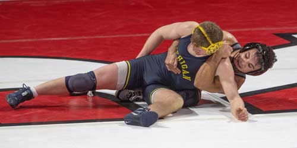

Week two of the college wrestling season kicked off and the action was nothing short of exciting. Here are my takeaways following this week’s action.
Michigan is proving their number two team ranking
The Big Ten conference kicked off its season on Friday with a double header on its network. A dual between the Wolverines and the Scarlet Knights of Rutgers got the night started and Michigan exerted their dominance early. Heading into half time the Wolverines were up 15-4 and following that they would only lose two matches to finish the dual. The impressive part about the way Michigan won was the fact they did it without All Americans Stevan Micic, and Myles Amine who are expected to join the team later in the season. This Wolverines team returns nine NCAA qualifiers as well as six All Americans but does have some key freshman who could be big factors down the stretch of the season. Dylan Ragusin will be someone to watch out for
Ragusin had already garnered the attention of the wrestling community following his results at the senior nationals, and the RTC cup. Ragusin got the start against the Scarlet Knights and made a statement by pinning 2020 NCAA qualifier Nico Aguilar in the first period. The true freshman’s next big test could come at the end of the month when the Wolverines take on the Iowa Hawkeyes with a chance to face multiple time NCAA champion Spencer Lee.
Seabass’s Rutgers debut doesn’t disappoint
Sebastian Rivera made his debut for the Scarlet Knights at 141 pounds facing NCAA qualifier Drew Mattin. What started off as a tight match quickly got out of hand once Rivera was able to get on top and work his turns to secure the major decision for Rutgers. Rivera appears to be an energy boost for the Scarlet Knights as he was seen hyping up and coaching his teammates on the sidelines. Rivera’s first big test of the season comes this Saturday as he takes on third ranked Nick Lee of Penn State.
Image from Peter Ackerman
Ohio State has some weights to sort out
The Buckeyes held their wrestle offs Saturday afternoon and two weights in particular had all eyes on them. There was a round robin tournament held at 141 pounds which saw competition between phenom freshman Anthony Echemendia, JD Stickley, and former blue-chip recruit Dylan D’Emilio. The round robin ended with Echemendia and D’Emlio squaring off with D’Emilio emerging victorious with a 6-4 score following a hard 7-minute match. At the 197-pound weight class Gavin Hoffman took out NCAA qualifier Chase Singletary in overtime. Having more than one guy who can score points for you come March is always a good problem to have, and the Buckeyes certainly aren’t new to this.
One other thing of note is returning NCAA qualifier Ethan Smith (who did not compete) plans to challenge fellow qualifier Kaleb Romero for the 174-pound spot.
The Freshman are rolling
Dylan Ragusin wasn’t the only newcomer to make a splash this week. True freshman Trevor Mastrogiovanni notched an 8-2 victory over 18th ranked Fabian Gutierrez of Tennessee-Chattanooga in his varsity debut. Unranked Trey Munoz of Arizona State also picked up a big upset knocking off 6th ranked Anthony Mantanona of Oklahoma. True freshman Nathan Haas of Nebraska also knocked off 15th ranked Owen Webster in the Huskers Friday night dual against Minnesota.
It’s certainly a season like no other and with more big time matches getting ready to kick off soon a college season that is already looking like no other could have even more surprises in the near future.
By Rich Perez